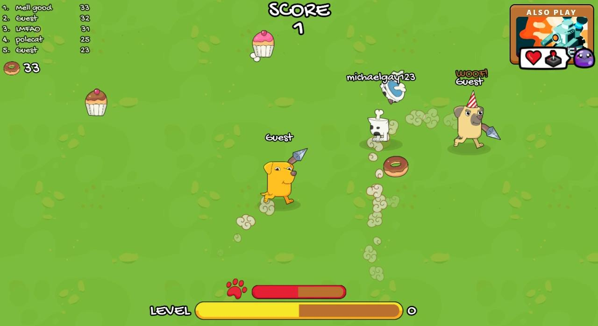
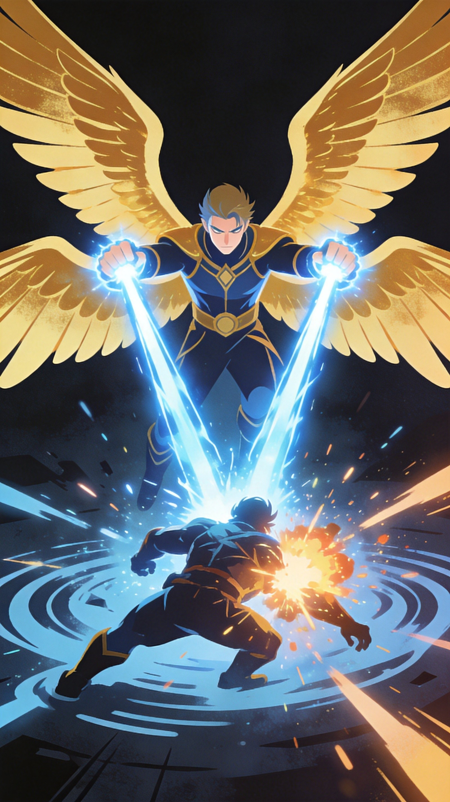

Dogod.io drops you into a primal ecosystem where the only rule is eat or be eaten. You start as a tiny creature and evolve through eating smaller beings, climbing the food chain until you're the apex predator. The evolution system is genuinely satisfying—there's nothing quite like finally evolving into a dragon and terrorizing the creatures that used to bully you. But getting there requires understanding the mechanics.
🎯 Game Basics
The Food Chain
Dogod.io is a survival ecosystem. Each creature has prey it can eat and predators it must avoid. The food chain is strict—you can only consume creatures below your tier.
Size and Power
Your creature's size determines what you can eat and who can eat you. Eating food and smaller creatures makes you grow. Larger creatures have more power but move slower.
Ecosystem Dynamics
The ecosystem constantly shifts. When top predators die, the creatures they were hunting become dominant. Watch for power vacuums and capitalize on them.
⬆️ Evolution System

Evolution Stages
Your creature evolves through distinct stages. Each evolution grants new abilities, increased size, and access to new prey. The path typically goes from insect-like creatures to small animals to apex predators.
- Stage 1 - Tiny creatures, eat berries and insects
- Stage 2 - Small animals, expanded diet
- Stage 3 - Medium creatures, predator status
- Stage 4 - Large predators, top of food chain
- Stage 5 - Apex predators, dragons and giants
Evolution Requirements
Evolution requires consuming enough biomass. The exact requirements vary by creature type. Focus on consistent feeding to trigger evolution as quickly as possible.
Special Abilities
Higher-tier creatures often gain abilities—speed boosts, damage resistance, or special attacks. Use these abilities strategically, especially during evolution transitions.
Evolution animations leave you exposed. During the transformation, you can't move or defend yourself. Evolve in safe locations away from predators.
Ecosystem Mechanics
The food chain isn't just visual—it's enforced mechanically. Creatures below your tier have different movement patterns, speeds, and behaviors. Studying prey behavior makes hunting more efficient.
Population Dynamics
The server ecosystem shifts constantly. When many creatures die, food becomes abundant. When predators dominate, prey populations dwindle. Reading these trends lets you predict safe zones and danger areas.
🎯 Survival Strategies
1. Start Small, Stay Smart
Early game, avoid anything your size or larger. Focus on food clusters and smaller creatures. Every successful meal brings you closer to evolution.
2. Know Your Prey and Predators
Study the food chain constantly. You should know what you can eat and what can eat you at any moment. This awareness prevents fatal mistakes.
3. Use Terrain
Obstacles, narrow passages, and terrain features create tactical opportunities. Small creatures can escape through gaps larger predators can't follow. Use the environment to your advantage.
4. Watch the Leaderboard
The leaderboard shows top creatures. Avoid their territories until you're competitive. Massive creatures often patrol certain areas—steer clear.
5. Predator Avoidance
When a predator spots you, immediate fleeing rarely works. Instead, use terrain. Cut through narrow gaps the predator can't follow. Double back unexpectedly. Make yourself unpredictable.
6. Feeding Patterns
Creatures gather at food-rich areas. These zones are dangerous because predators wait there too. Survey feeding grounds before committing. Quick grabs followed by immediate retreat minimize exposure.
7. Migration Timing
The ecosystem shifts constantly. When large predators die, their prey populations explode. During these power vacuums, aggressive feeding accelerates evolution dramatically.
8. Apex Survival
Once you've reached apex status, maintain awareness of threats. Even apex predators can be ganged up on by coordinated prey. Stay mobile and don't get comfortable at the top.

💎 Pro Tips
Time your evolution. Early evolution gives advantages but happens when you're most vulnerable. Wait for safe moments to trigger transformations.
Don't overextend when evolved. Massive creatures move slowly and can't escape threats easily. Stay aware of surroundings even when you're dominant.
Hunt in feeding zones. High-food areas attract both prey and predators. Use the chaos to pick off weak targets while avoiding stronger hunters.
Play the ecosystem. When top predators die, prey populations explode. Capitalize on these moments to evolve quickly before new threats emerge.

❓ Frequently Asked Questions
How do I evolve in Dogod.io?
Consume enough food and smaller creatures to fill your evolution meter. Once full, you'll automatically trigger an evolution sequence that transforms you into a more powerful creature.
What can I eat at my current stage?
You can eat creatures below your evolution tier and certain food items. Always check if potential prey is safe to attack—eating creatures near your tier is risky.
What happens when I die?
Death respawns you as a Stage 1 creature. You lose all evolution progress and must rebuild from scratch. Play carefully to minimize death frequency.
How do I avoid predators?
Stay aware of your surroundings and identify threats quickly. Use terrain for cover, stick to areas with escape routes, and avoid getting cornered.
What's the highest evolution tier?
The apex tiers vary by server but typically include dragons, giants, or other legendary creatures. Reaching these tiers requires significant time and survival skill.
Can I play with friends?
Team modes allow coordinated survival with friends. Hunting together and watching each other's backs significantly improves survival rates.
📝 Related Games to Try
Love survival ecosystems? Check out Mope.io for similar evolution gameplay, Gulper.io for creature combat, or Spinner.io for arena action.
📝 Conclusion
Dogod.io captures the primal satisfaction of climbing the food chain. Starting weak and evolving into an apex predator is genuinely rewarding. Respect the ecosystem, survive smart, and eventually you'll be the creature everyone fears.
Enter the ecosystem and begin your climb! Will you eat, or will you be eaten?
Last updated: January 20, 2024
Written by the iogameguide.com team